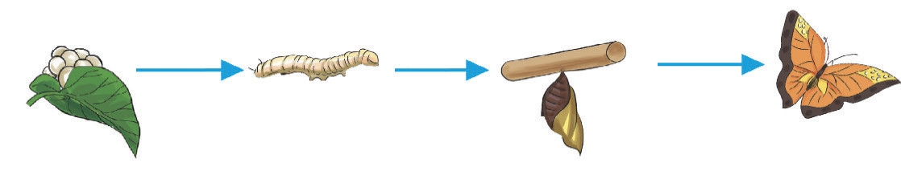
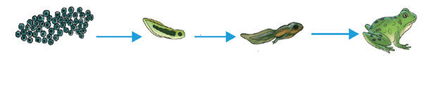

hivi katika chakula unaweza kusababisha ukuaji hafifu na maendeleo duni ya mwili.
Hali ya hewa na mazingira
Wanyama huathiriwa na mazingira wanamoishi. Hali zisizofaa kama joto kali, baridi kupita kiasi, hewa isiyo safi, na uhaba wa nafasi huweza kusababisha msongo wa mawazo na kupunguza kasi ya ukuaji wao. Ili miili ya wanyama ifanye kazi kwa ufanisi, wanahitaji joto la wastani. Aidha, kiwango sahihi cha mwanga katika mazingira kinahitajika katika ukuaji wa wanyama. Kwa baadhi ya spishi, mwanga wa kutosha huchochea hamu ya kula na uzalishaji wa homoni, hivyo kuongeza kasi ya ukuaji na uzalishaji.
Maji
Wanyama wanahitaji maji safi na salama katika ukuaji wao. Maji ni hitaji muhimu katika shughuli za mwili kama mmeng’enyo wa chakula, udhibiti wa joto la mwili na usafirishaji wa virutubisho ndani ya mwili. mambo haya yote ni muhimu kwa ukuaji wa wanyama.
Ifuatayo ni mifano ya mabadiliko mbalimbali katika ukuaji wa wanyama:
(a) Vipepeo hupitia hatua mbalimbali za ukuaji ambazo ni: Yai → Lava → Buu → Kipepeo

(b) Chura hupitia hatua zifuatazo za ukuaji: Yai → Kiluwiluwi → Kiluwiluwi chenye miguu → Chura

(c) Binadamu hupitia hatua zifuatazo za ukuaji: Utoto wa awali → Utoto → Ujana → Utu uzima → Uzee